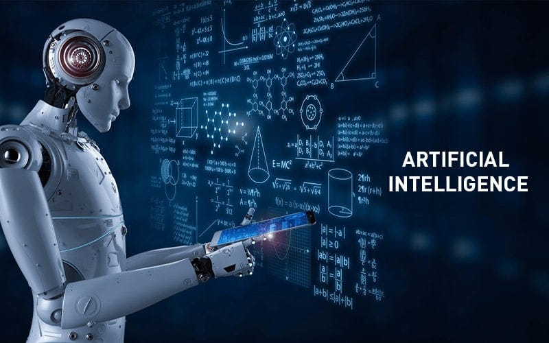

The Evolution of Innovation
Technology has transformed the way we live, work, and communicate. From the invention of the wheel to the age of artificial intelligence, it has been a journey of constant innovation.
Understanding the history and impact of technology helps us appreciate its role in shaping the future.
Milestones in Technology
Here are some key achievements in the history of technology:

The ENIAC (Electronic Numerical Integrator and Computer), developed in 1945, was one of the first general-purpose digital computers. It was capable of performing complex calculations and laid the groundwork for modern computing.
Artificial intelligence (AI) represents one of the most transformative technological advancements. AI applications, from machine learning to natural language processing, are reshaping industries and everyday life.
Impact of Technology
Technology has revolutionized many aspects of society:
- Healthcare: Advances in medical technology, such as MRI machines and robotic surgery, have improved patient outcomes and extended life expectancy.
- Communication: The internet and smartphones have made instant global communication possible, connecting people like never before.
- Education: Online learning platforms and digital tools have made education accessible to millions around the world.
- Transportation: Innovations such as electric vehicles and autonomous cars are shaping the future of mobility.
The Future of Technology
As technology continues to evolve, it brings both opportunities and challenges. Emerging fields like quantum computing, biotechnology, and renewable energy hold the potential to solve some of the world's most pressing problems. However, ethical considerations, such as data privacy and the impact of automation on jobs, must also be addressed.
By embracing innovation responsibly, humanity can harness the power of technology to create a brighter and more sustainable future.